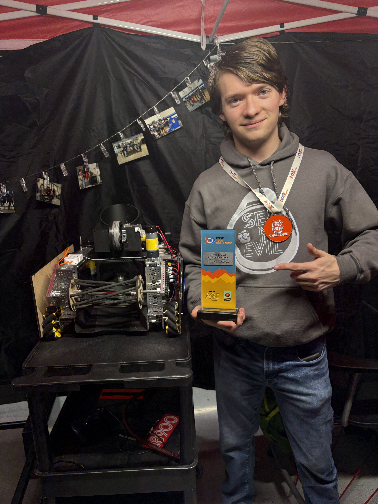
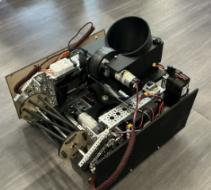
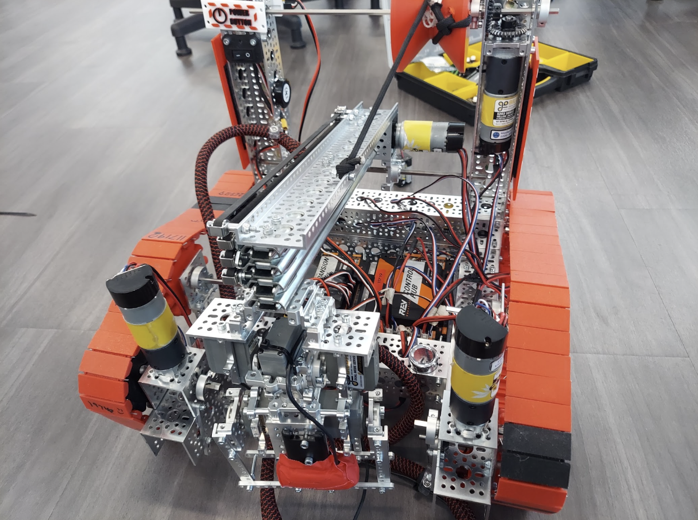
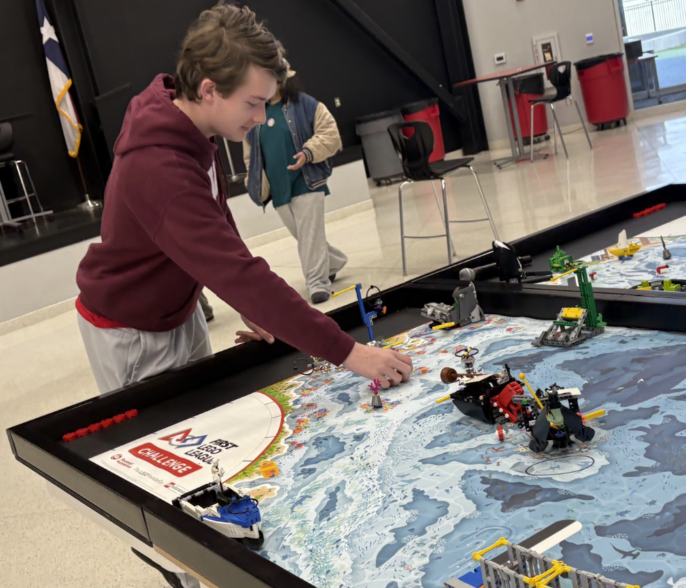
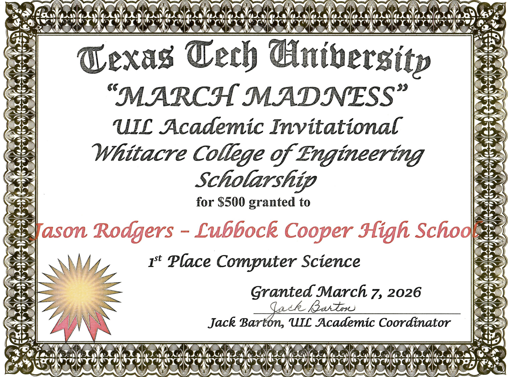
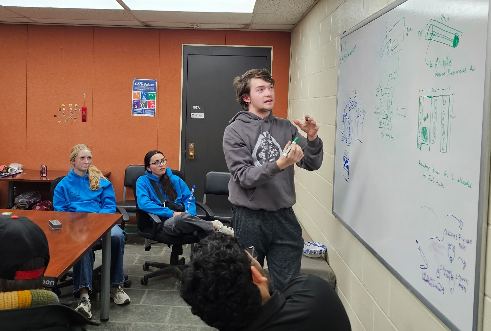

Academics and Extracurriculars
Robotics
Participated from Sophomore to Senior year being a member of FTC teams 11719 and 18900 respectively. Won 1st place and 2nd place Inspire at the League level and won 2nd place Inspire at the Regional level. Qualified for State UIL 2 years in a row. Also was mentored by engineering students at Texas Tech University and helped them provide assistance to fellow FTC teams.



DECA
Competed all 4 years of highschool qualifying for State in all 4 years. I made it as a State Finalist, International Career Development Conference Qualifier, and ranked top 20 in the world in my respective competition of Travel and Tourism Team Decision Making where I had to create solutions to marketing and business related problems under severe time restrictions and present these solutions to a judge. Junior and Senior year I was the Co-President responsible for Chapter Campaigns and Competitions where I arranged meetings, submitted proof for campaigns, guided newer members on competitions, and connected with officers at other DECA chapters.
National Honor Society
Volunteered at school concession stands along with STEM related outreach events such as the Science Spectrum STEM encouragement programs, FIRST Lego League as both a referee and a judge, and assisting other FTC teams through coding, development, deisng, and build.

Computer Science UIL
Competed in Computer Science UIL which is part of a Texas based set of competitions in which teams partake in multiple choice exams covering a wide range of computer science subjects from converting number bases and basic Java development syntax to boolean algebra and searching/sorting algorithms. Teams would then compete in a hands on portion of the competition to develop programs that could turn a given input into a desired output under severe time constraints. This competition taught me how to code and logically reason through requests quickly while also better understanding just how computers process data and information better preparing me for the field.

FRC/Engineering Mentorship
Was mentored by both undergraduate and graduate engineering students alike at Texas Tech University
in more advanced forms of robotics competitions introducing me to new ways to think of ideas,
new programming architectures and languages, and methods of construction along with use of
industrial equipment such as CNC machines.

Orchestra
Participated in the Lubbock-Cooper Orchestra playing the Violin and Cello from grades 6 to 10 where I qualified for All-Region every year from years 7 to 10 and competed at UIL State Solo and Ensemble twice. I was consistently a first violin and alongside high school experience I also played across town in several different churches around the holidays and performed in a college recital amongst music majors and professional musicians alike during my sophomore year.